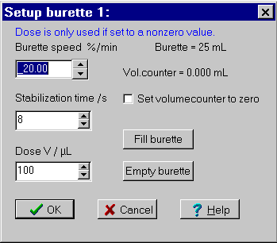

Menu in Datalyse
Graphical measurement
Control panel
Baud rate 9600, even parity, 1 stop, 7 data bits.
The cable has a DIN connector (the pins are connected as follows 3, 20, 6, 7, 2 counterclockwise from 9 o'clock to 3 o'clock). The communication is troublesome since the device requires handshake for each character.
ABU93 has 3 burette stations capable of independent control. It is also equipped with 2 electrode inputs, pH/mV
Only station A is available in Datalyse.
If you use 2 devices in Datalyse, ABU93 can be one of them. Then you can choose between different types of measuring:
If you choose the (x,y)-graph, you would probably prefer to have ABU93 connected to the »lowest« comport, as the graph is most likely to have V/mL on the x-axis and for instance absorbance on the y-axis.
Whenever a measuring series is ended the remote control is released.
Control panel:

Tip: It is faster to adjust the number with »Up« and »Down« than by clicking on the arrows with mouse.
When ABU93 is turned on, the burette speed is set to 1 burette volume per minute and the dose is set to 0.000 mL.
In this menu you can adjust the burette speed from about 0.50% to 100% of the burette volume per minute. The minimum value depends on the burette and is calculated in Datalyse.
You can also reset the volume counter. The counter of the ABU93 goes from 0 to 999999, so the maximum volume for a 10 mL burette is 999999/20000*10mL = 500 mL.
The are two ways to control the burette:
1: Dose > 0:
Upon each measuring, V/µL is dosed and the measuring is paused for e.g. 8 seconds. When the burette is empty, it is automatically refilled. Note that the smallest possible measuring time is 1 second larger than the stabilization time.
2: Dose = 0:
Measuring with continual dosing and no pauses, and no measuring is done while the burette is filled.
At dose >0 the dose velocity should not be too small! There is a pause, and it is possible to set the time per measuring.
At dose = 0 with continual measuring, the smallest possible dose velocity would be preferable.
»Fill burette« and »Empty burette« works immediately. The other selections will not take effect until »OK« is pressed.
Note that this menu will be under »menu for two devices«, when ABU93 is one of the two.